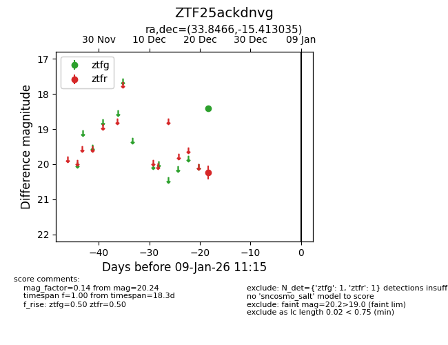
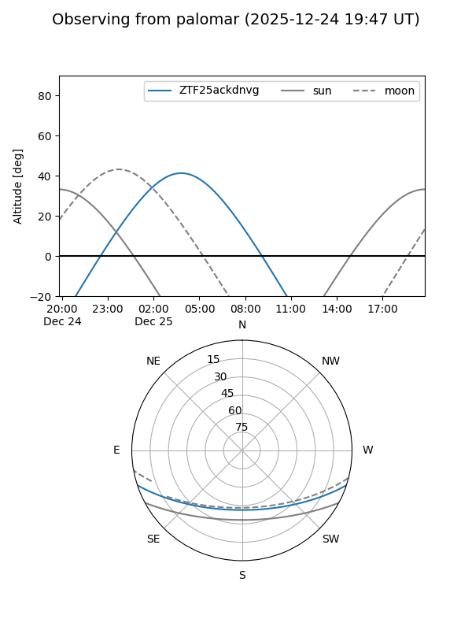

ZTF25ackdnvg
Target ZTF25ackdnvg at 2025-12-24 16:17
Aliases and brokers:
FINK: fink-portal.org/ZTF25ackdnvg
Lasair: lasair-ztf.lsst.ac.uk/objects/ZTF25ackdnvg
ALeRCE: alerce.online/object/ZTF25ackdnvg
alt names
ZTF25ackdnvg (ztf,fink_ztf)
Coordinates:
equatorial (ra, dec) = 33.8466,-15.41304
equatorial (HMS+DMS) = 02:15:23.19,-15:24:46.93
galactic (l, b) = (186.2016,-67.25745)
Flags:
Photometry:
last ztfg=18.42, ztfr=20.24
1 ztfg, 1 ztfr detections
Lightcurve

Visibility


Additional plots